单一卖点 × 5 个创意方向 × 3 个尺寸 = 15 张 | 抖音 · 朋友圈 · 淘宝
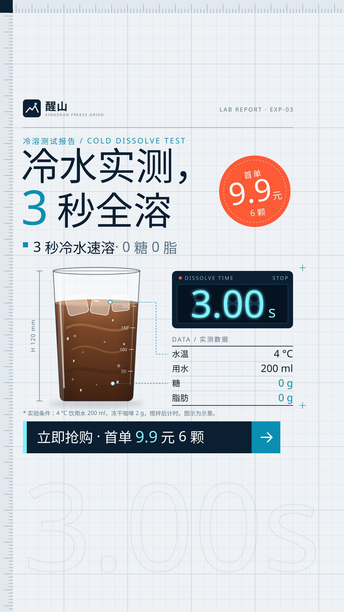
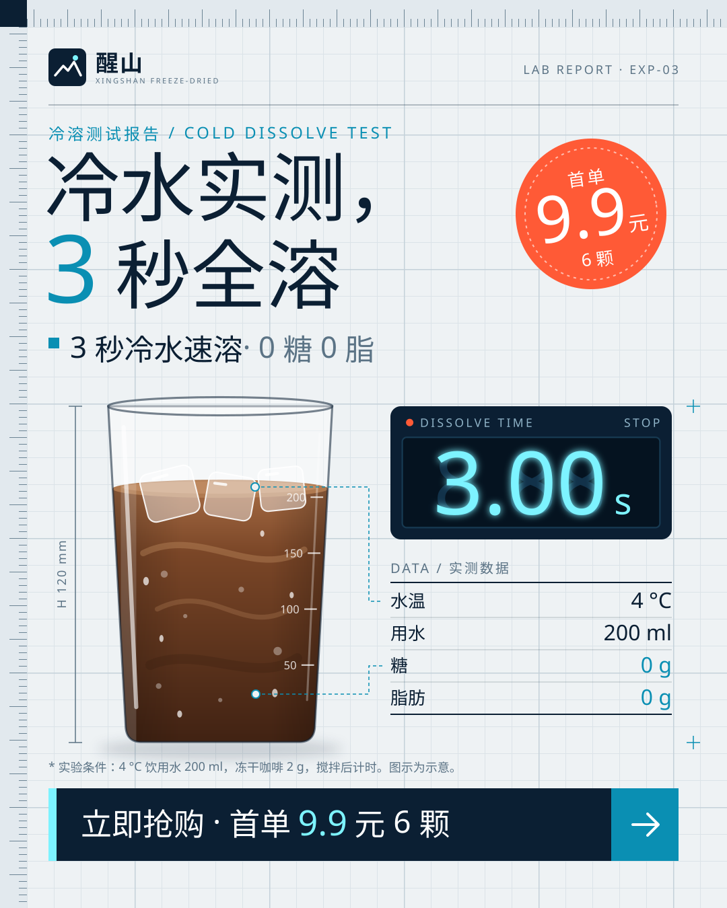
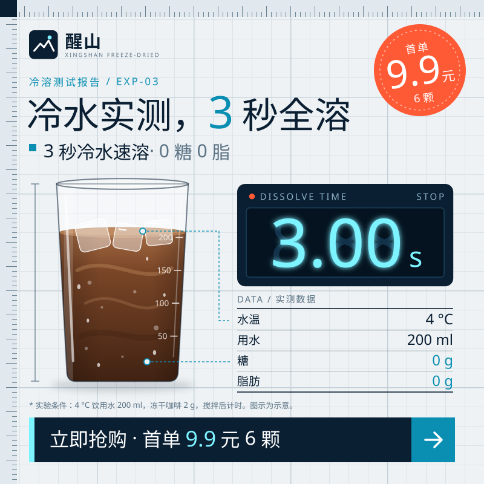
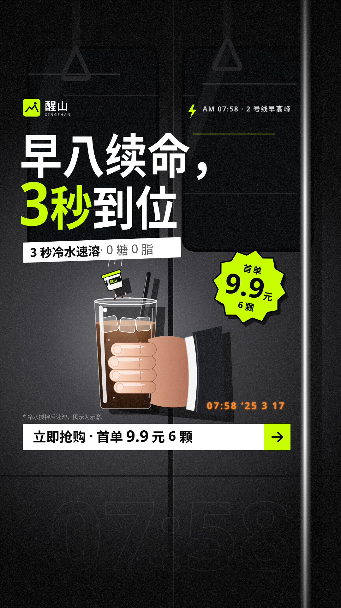
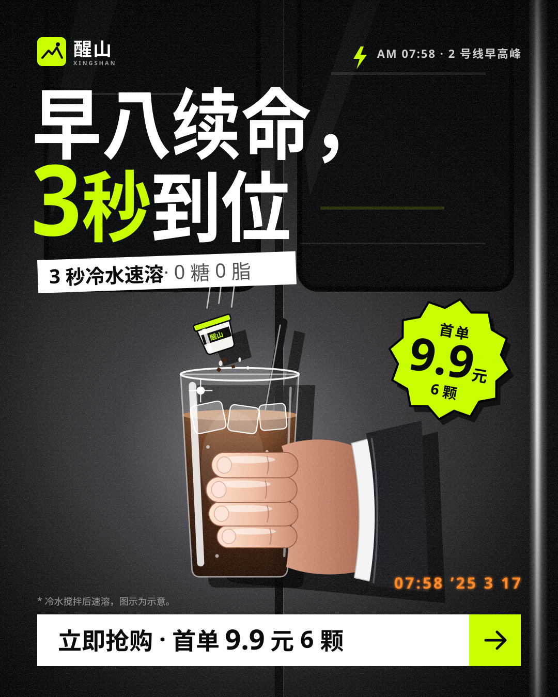
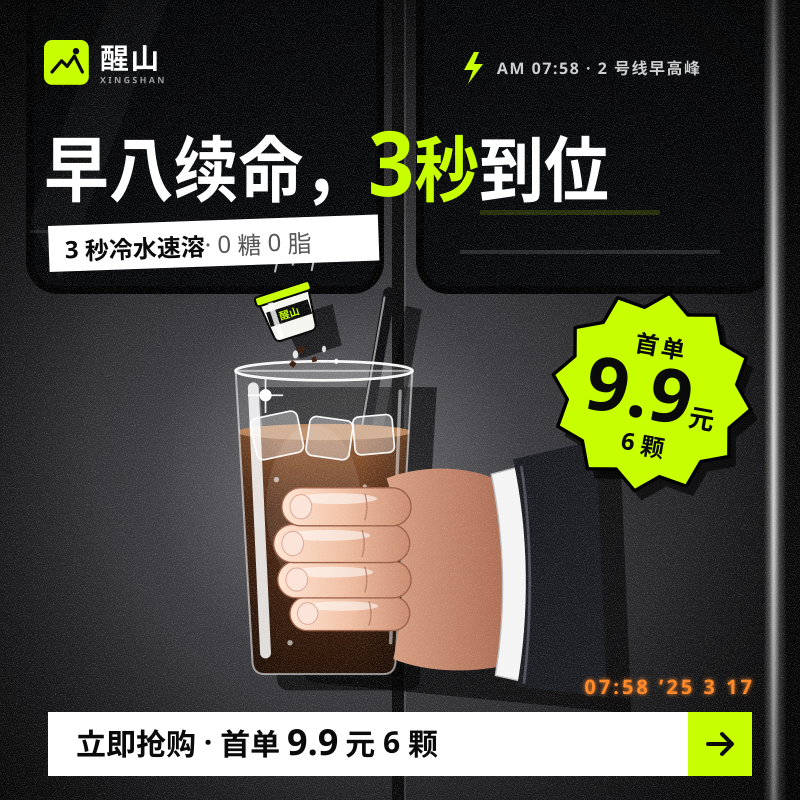
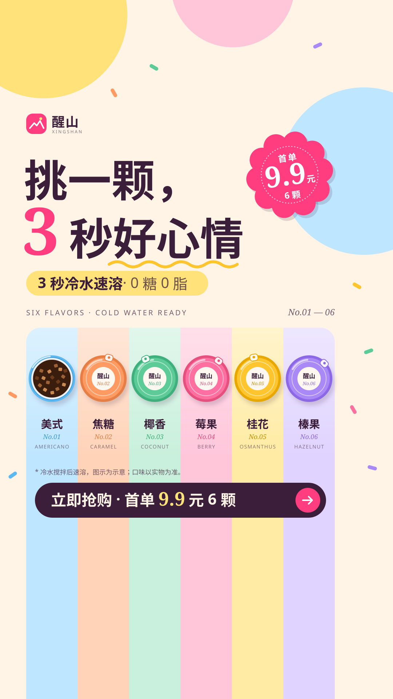
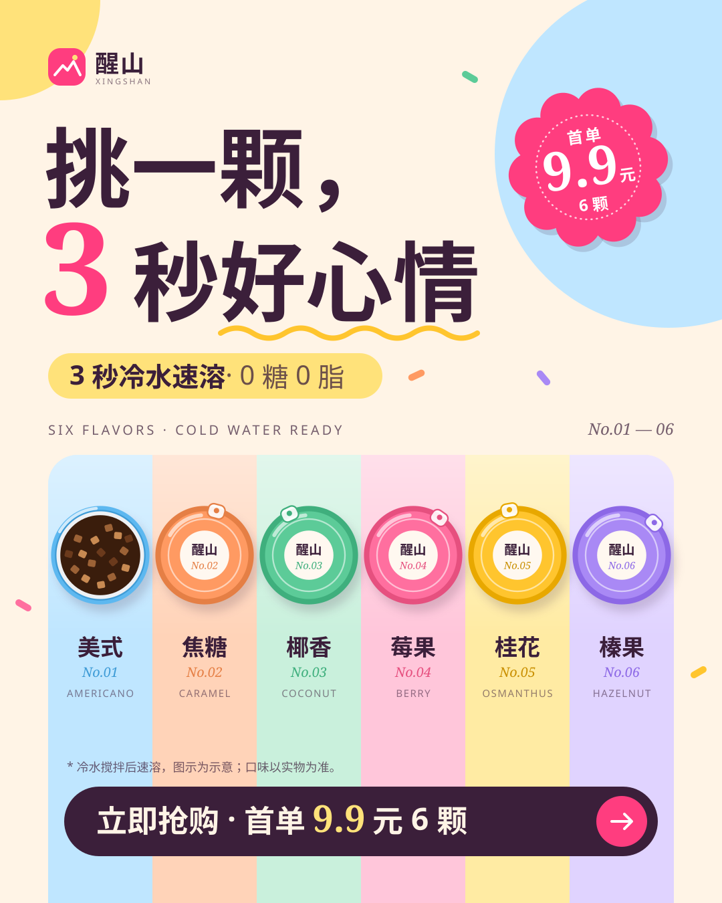
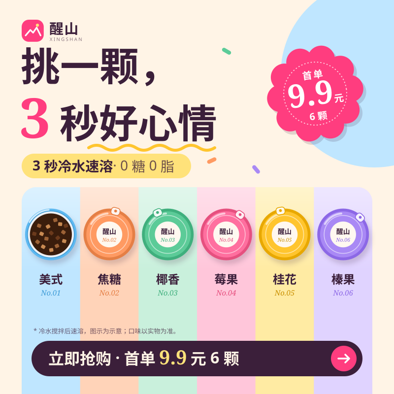
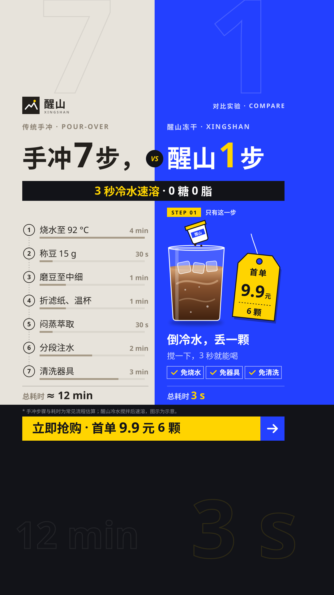
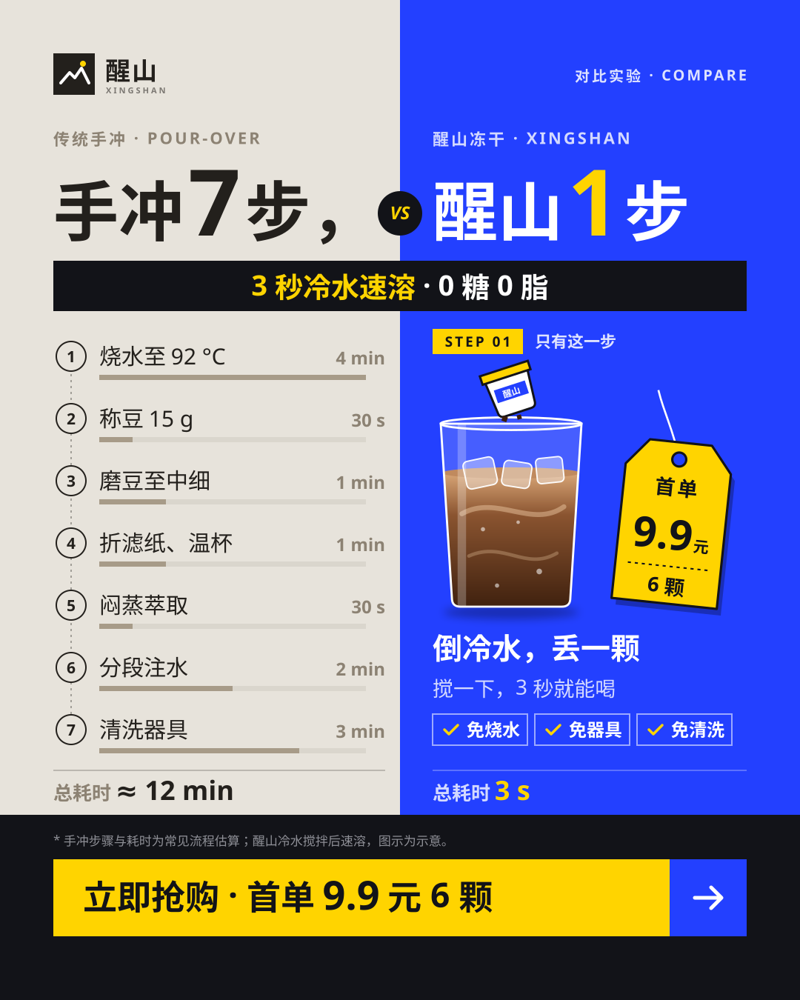
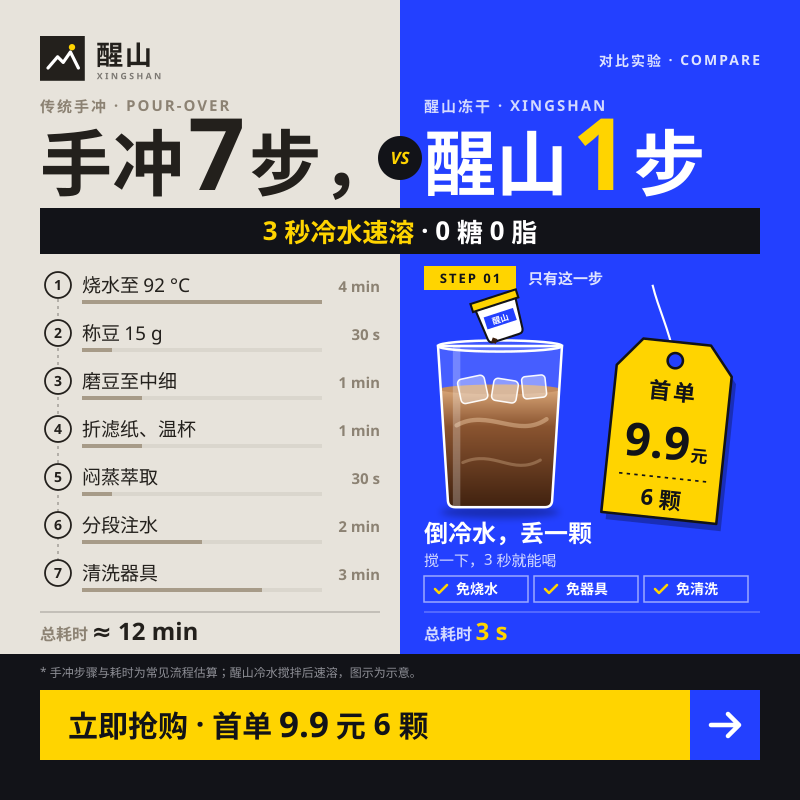
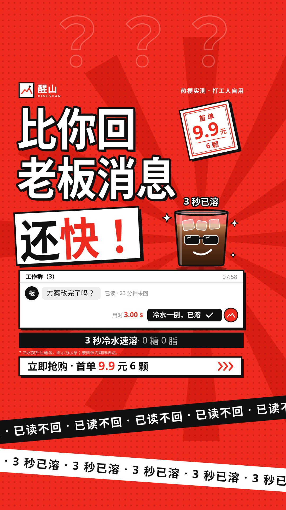
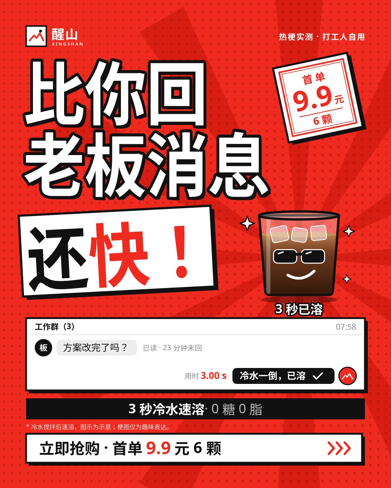
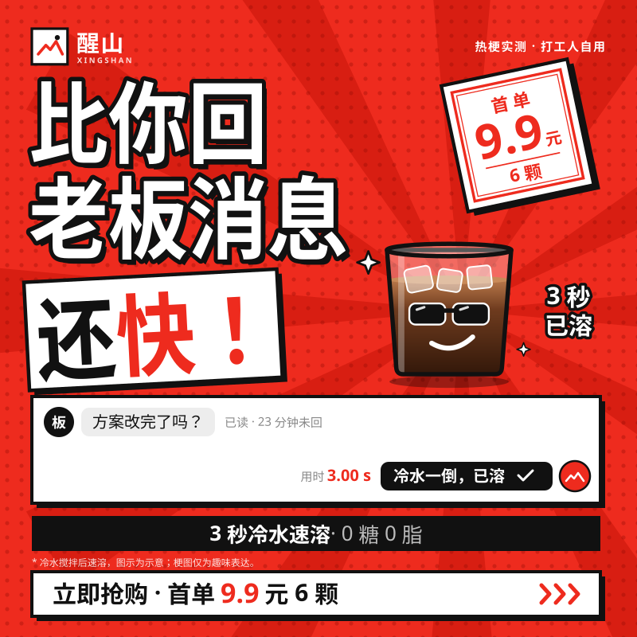
| 方向 | 底色 | 字体 | 版式逻辑 | 角标 | 主测指标 |
|---|---|---|---|---|---|
| A 实验室 | 雾灰蓝 | 思源 Light · DIN | 数据排版 | 圆形 | CTR / CVR |
| B 打工人 | 近黑 | 思源 Heavy 横压 · Futura | 现场抓拍 | 爆炸贴 | 3 秒完播 / CTR |
| C 颜值 | 奶油白 | 宋体 · Didot | 色卡陈列 | 花瓣 | 收藏 / 客单价 |
| D 对比 | 灰 / 钴蓝分屏 | 冬青黑体 · Avenir | 对照表 | 吊牌 | 停留 / CTR |
| E 玩梗 | 警报红 | 思源 Heavy 纵拉描边 | 梗图 + 截图 | 印章 | 评论 / 分享 |